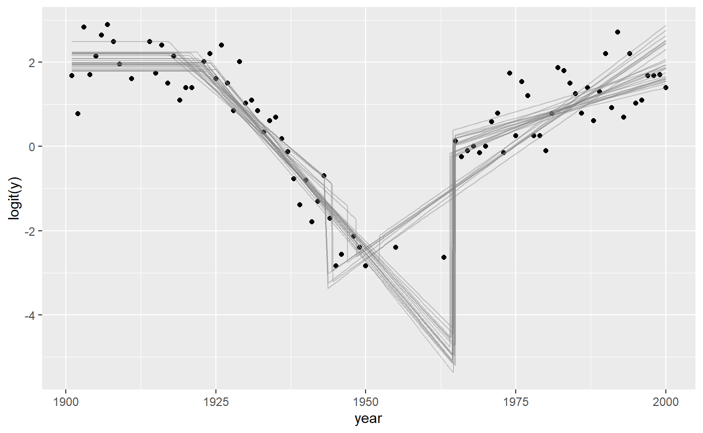

Binomial change point analysis with mcp
Jonas Kristoffer Lindeløv
2020-01-10
binomial.Rmdmcp aims to implement Generalized Linear Models in a way that closely mimics that of brms::brm. You can set the family and link functions using the family argument.
First, let us specify a toy model with three segments:
model = list(
y | trials(N) ~ 1, # constant rate
~ 0 + year, # joined changing rate
~ 1 + year # disjoined changing rate
)Simulate data
If you already have data, you can safely skip this section.
We run mcp with sample = FALSE to get what we need to simulate data.
Now we can simulate. First, let us see the model parameters.
## $x
## [1] "year"
##
## $y
## [1] "y"
##
## $trials
## [1] "N"
##
## $varying
## NULL
##
## $sigma
## character(0)
##
## $arma
## character(0)
##
## $reg
## [1] "cp_1" "cp_2" "int_1" "int_3" "year_2" "year_3"
##
## $population
## [1] "cp_1" "cp_2" "int_1" "int_3" "year_2" "year_3"- It takes two intercepts (
int_*), for segments 1 and 3. - It takes two slopes (
year_*), for segment 2 and 3. - It takes two change points (
cp_*) - one between each segment.
empty$simulate is now a function that can predict data given these parameters. If you are in a reasonable R editor, type empty$simulate( and press TAB to see the required arguments. I came up with some values below, including change points at \(year = 25\) and \(year = 65\). Notice that because binomial() defaults to the link function link = "logit", the intercept and slopes are on a logit scale. Briefly, this extends the narrow range of binomial rates (0-1) to an infinite logit scale from minus infinity to plus infinity. This will be important later when we set priors.
df = data.frame(
year = 1901:2000, # evaluate for each of these
N = sample(10:20, size = 100, replace = TRUE) # number of trials
)
df$y = empty$simulate(
df$year, df$N,
cp_1 = 1925, cp_2 = 1965,
int_1 = 2, int_3 = 0,
year_2 = -0.2, year_3 = 0.05)
df## year N y
## 1 1901 12 11
## 2 1902 18 16
## 3 1903 19 18
## 4 1904 20 18
## 5 1905 14 13
## 6 1906 17 17
## 7 1907 19 18
## 8 1908 16 15
## 9 1909 14 9
## 10 1910 19 17
## 11 1911 17 14
## 12 1912 12 10
## 13 1913 13 12
## 14 1914 19 16
## 15 1915 15 15
## 16 1916 17 14
## 17 1917 12 11
## 18 1918 17 15
## 19 1919 10 10
## 20 1920 14 11
## 21 1921 18 17
## 22 1922 12 11
## 23 1923 12 11
## 24 1924 10 9
## 25 1925 11 11
## 26 1926 20 17
## 27 1927 13 10
## 28 1928 16 15
## 29 1929 11 8
## 30 1930 20 17
## 31 1931 18 15
## 32 1932 14 9
## 33 1933 11 8
## 34 1934 20 10
## 35 1935 13 7
## 36 1936 16 5
## 37 1937 19 6
## 38 1938 11 5
## 39 1939 19 2
## 40 1940 14 4
## 41 1941 12 4
## 42 1942 19 5
## 43 1943 14 3
## 44 1944 19 5
## 45 1945 10 1
## 46 1946 19 4
## 47 1947 18 0
## 48 1948 13 1
## 49 1949 19 1
## 50 1950 13 1
## 51 1951 18 0
## 52 1952 16 2
## 53 1953 15 0
## 54 1954 16 0
## 55 1955 15 0
## 56 1956 12 0
## 57 1957 20 0
## 58 1958 11 1
## 59 1959 20 1
## 60 1960 14 0
## 61 1961 13 0
## 62 1962 12 0
## 63 1963 20 0
## 64 1964 13 0
## 65 1965 14 9
## 66 1966 13 5
## 67 1967 19 9
## 68 1968 17 9
## 69 1969 17 8
## 70 1970 10 7
## 71 1971 14 6
## 72 1972 16 5
## 73 1973 18 13
## 74 1974 10 7
## 75 1975 20 13
## 76 1976 15 11
## 77 1977 15 8
## 78 1978 14 11
## 79 1979 12 7
## 80 1980 18 14
## 81 1981 18 14
## 82 1982 16 8
## 83 1983 10 8
## 84 1984 15 10
## 85 1985 13 11
## 86 1986 14 11
## 87 1987 11 8
## 88 1988 17 8
## 89 1989 18 15
## 90 1990 14 11
## 91 1991 20 17
## 92 1992 13 12
## 93 1993 13 12
## 94 1994 18 17
## 95 1995 15 14
## 96 1996 14 12
## 97 1997 19 17
## 98 1998 13 11
## 99 1999 16 16
## 100 2000 13 12Visually:

Check parameter recovery
The next sections go into more detail, but let us quickly see if we can recover the parameters used to simulate the data.
We can use summary to see that it recovered the parameters to a pretty good precision. Again, recall that intercepts and slopes are on a logit scale.
## Family: binomial(link = 'logit')
## Iterations: 9000 from 3 chains.
## Segments:
## 1: y | trials(N) ~ 1
## 2: y | trials(N) ~ 1 ~ 0 + year
## 3: y | trials(N) ~ 1 ~ 1 + year
##
## Population-level parameters:
## name match sim mean lower upper Rhat n.eff
## cp_1 OK 1925.00 1921.325 1917.853 1925.090 1 500
## cp_2 1965.00 1964.500 1964.035 1964.982 1 5456
## int_1 OK 2.00 2.119 1.769 2.497 1 929
## int_3 OK 0.00 0.050 -0.284 0.380 1 1011
## year_2 -0.20 -0.162 -0.186 -0.139 1 972
## year_3 OK 0.05 0.038 0.022 0.056 1 992summary uses 95% highest density intervals (HDI) by default, but you can change it using summary(fit, width = 0.80). If you have varying effects, use ranef(fit) to see them.
Plotting the fit confirms good fit to the data, and we see the discontinuities at the two change points:

These lines are just fit$simulate applied to a random draw of the posterior samples. In other words, they represent the joint distribution of the parameters. You can change the number of draws (lines) using plot(fit, lines = 50).
Notice for binomial models it defaults to plot the rate (y / N) as a function of x. The reason why is obvious when we plot on “raw” data by toggling rate:

These lines are jagged because N varies from year to year. Although there is close too 100% success rate in the years 1900 - 1920, the number of trials varies, as you can see in the raw data. However, using rate = FALSE will be great when the number of trials is constant for extended periods of time, as y is more interpretable then.
Of course, these plots work with varying effects as well.
Model diagnostics and sampling options
Already in the default plot as used above, it will be obvious if there was poor convergence. A more direct assessment is to look at the posterior distributions and trace plots:

Convergence is perfect here as evidenced by the overlapping trace plots that look like fat caterpillars (Bayesians love fat caterpillars). Notice that the posterior distribution of change points can be quite non-normal and sometimes even bimodal. Therefore, one should be careful not to interpret the HDI as if it was normal.
plot() and plot_pars() can do a lot more than this, so check out their documentation.
Priors for binomial models
mcp uses priors to achieve a lot of it’s functionality. See how to set priors, including how to share parameters between segments and how to fix values. Here, I post a few notes about the binomial-specific default priors.
The default priors in mcp are set so that they are reasonably broad to cover most scenarios, though also specific enough to sample effectively. They are not “default” as in “canonical”. Rather, they are “default” as in “what happens if you do nothing else”. All priors are stored in fit$prior (also empty$prior). We did not specify prior above, so it ran with default priors:
## [,1]
## cp_1 "dt(MINX, (MAXX - MINX) / N_CP, N_CP - 1) T(cp_0, MAXX)"
## cp_2 "dt(MINX, (MAXX - MINX) / N_CP, N_CP - 1) T(cp_1, MAXX)"
## int_1 "dnorm(0, 3)"
## int_3 "dnorm(0, 3)"
## year_2 "dnorm(0, 3 / (MAXX - MINX))"
## year_3 "dnorm(0, 3 / (MAXX - MINX))"The priors on change points are discussed extensively in the prior vignette. The priors on slopes and intercepts are normals with standard deviation of “3” logits. This corresponds to quite extreme binomial probabilities, yet not so extreme as to be totally flat. Here are visualization of priors dnorm(0, 1) (red), dnorm(0, 2) (black, mcp default), and a dnorm(0, 5) (blue) prior, and the correspondence between logits and probabilities:
inverse_logit = function(x) exp(x) / (1 + exp(x))
# Start the plot
library(ggplot2)
ggplot(data.frame(logits = 0), aes(x = logits)) +
# Plot normal prior. Set parameters in "args"
stat_function(fun=dnorm, args = list(mean=0, sd = 1), lwd=2, col="red") +
stat_function(fun=dnorm, args = list(mean=0, sd = 3), lwd=2, col="black") +
stat_function(fun=dnorm, args = list(mean=0, sd = 5), lwd=2, col="blue") +
# Set the secondary axis
scale_x_continuous(breaks = -7:7,limits = c(-7, 7), sec.axis = sec_axis(~ inverse_logit(.), name = "Probability", breaks = round(inverse_logit(seq(-7, 7, by = 2)), 3)))
Please keep in mind that when these priors combine through the model, the joint probability may be quite different.
Returning to the priors, the 3 / (MAXX - MINX) on slopes mean that this change in probability occurs over the course of the observed X.
JAGS code
Here is the JAGS code for the model used in this article.
##
## model {
##
## # Priors for population-level effects
## cp_0 = MINX # mcp helper value.
## cp_3 = MAXX # mcp helper value.
##
## cp_1 ~ dt(MINX, 1/((MAXX-MINX)/N_CP)^2, N_CP-1) T(cp_0, MAXX)
## cp_2 ~ dt(MINX, 1/((MAXX-MINX)/N_CP)^2, N_CP-1) T(cp_1, MAXX)
## int_1 ~ dnorm(0, 1/(3)^2)
## int_3 ~ dnorm(0, 1/(3)^2)
## year_2 ~ dnorm(0, 1/(3/(MAXX-MINX))^2)
## year_3 ~ dnorm(0, 1/(3/(MAXX-MINX))^2)
##
##
## # Model and likelihood
## for (i_ in 1:length(year)) {
## X_1_[i_] = min(year[i_], cp_1)
## X_2_[i_] = min(year[i_], cp_2) - cp_1
## X_3_[i_] = min(year[i_], cp_3) - cp_2
##
## # Fitted value
## y_[i_] =
##
## # Segment 1: y | trials(N) ~ 1
## (year[i_] >= cp_0) * (year[i_] < cp_2) * int_1 +
##
## # Segment 2: y | trials(N) ~ 1 ~ 0 + year
## (year[i_] >= cp_1) * (year[i_] < cp_2) * year_2 * X_2_[i_] +
##
## # Segment 3: y | trials(N) ~ 1 ~ 1 + year
## (year[i_] >= cp_2) * int_3 +
## (year[i_] >= cp_2) * year_3 * X_3_[i_]
##
## # Likelihood and log-density for family = binomial()
## y[i_] ~ dbin(ilogit(y_[i_]), N[i_])
## loglik_[i_] = logdensity.bin(y[i_], ilogit(y_[i_]), N[i_])
## }
## }